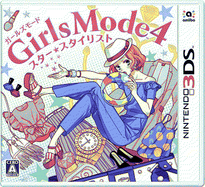

style savvy styling star
status: currently
release date: 2 november 2017
developer: syn sophia
genre/type: fashion, simulator
logs
03.sep.24 started playing this right when i finished playing trendsetters. i asked on my private twitter if i should play styling star or fashion forward next and my only oomf who has played the style savvy games voted for styling star so!!! here i am.
first thing i noticed about the game is that there is no 3D option unless my game is bugged but? i don't think that's it. and taking a look at the release date being in 2017 then yeah that makes a LOT of sense, since i know nintendo was barely pushing the 3D gimmick of the 3DS at that time. i don't think i've made it pass the tutorial of the game, but once i have a few more minutes with the game i'll come back to this to write some more of my thoughts.